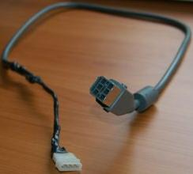
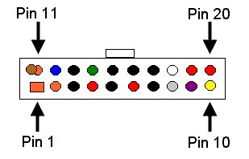

XBOX POWER SUPPLY REPLACEMENT WITH PC ATX
STYLE
If you cut the Xbox power cable (cut near the cable near the original
power supply to leave me with the maximum length of cable). Peel
back the grey sleeve, and the shielding, and the internal black
sleeve. You will see 10 wires running through the cable.
4 Yellow, 4 Black, 1 Red and 1 Blue.
Find an ATX power supply. The original XB360 PSU is rated
at 203 watts. You can use a 230/250watt ATX Style PSU.
Cut the wires of one of the hard disk type connectors. You can
buy a "Y" adapter and cut one of those off.
Connect them to the Xbox power cable as so:
Red to Red
Black To Black
Yellow to Yellow

In order to get an ATX power supply to power up you have to connect pin
14 (the green wire) of the ATX power connector to a ground. So, cut the
green wire from pin 14, and the ground (black) wire from pin 13 and
connect them together (always on) or a toggle switch so you can turn
the supply off if you want to. Other than that, the supply will
stay on all the time. The XB360 supply is always on, but is only
supplying 5V when the Xbox360 is off.

What is the BLUE wire for from the Original supply? I have no
idea, it may also be a sense wire of some sort, but, the Xbox360 works
with the ATX supply.
The blue wire may be the sense wire to tell the PSU to turn on the 12V
to the console when the power button is pressed, or the unit is turned
on by a controller. Since the original PSU is stll supplying 5VDC
voltage when the 360 is off, the blue just may be that
trigger. With the replacement ATX supply, you will be at a
constant 12V/5V DC output to the Xbox360. I have no idea if the
continual 12V will do any harm to the unit or not. This
replacement was done by a person who had no other choice but to pay
Microsoft for another PSU, upwards of 80.00!!